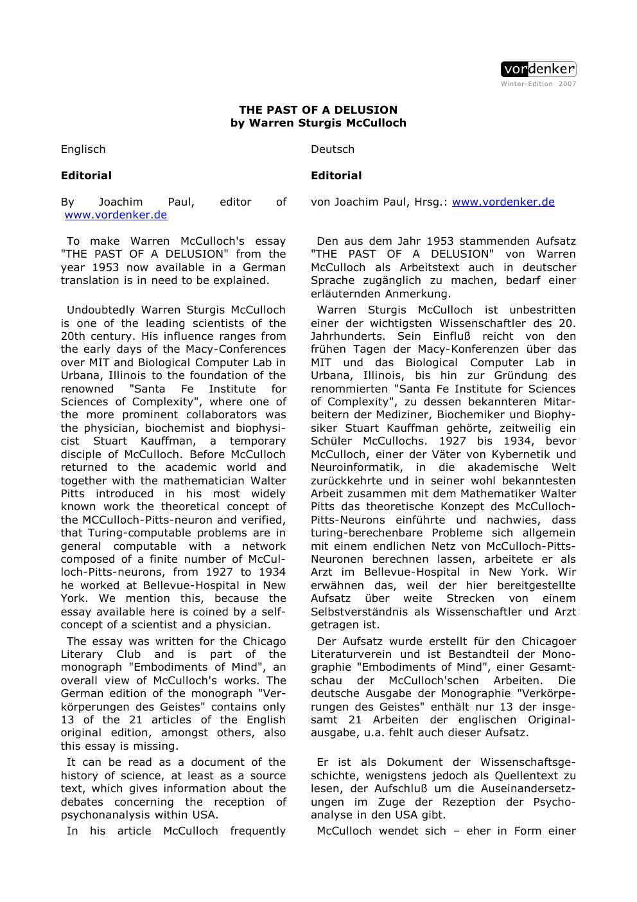
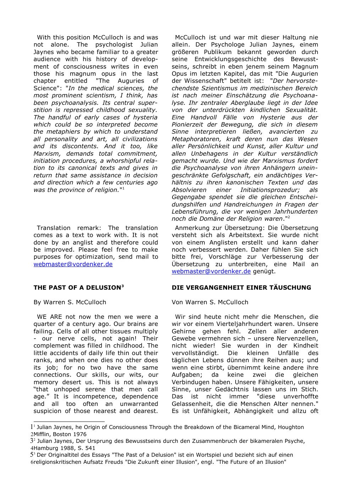
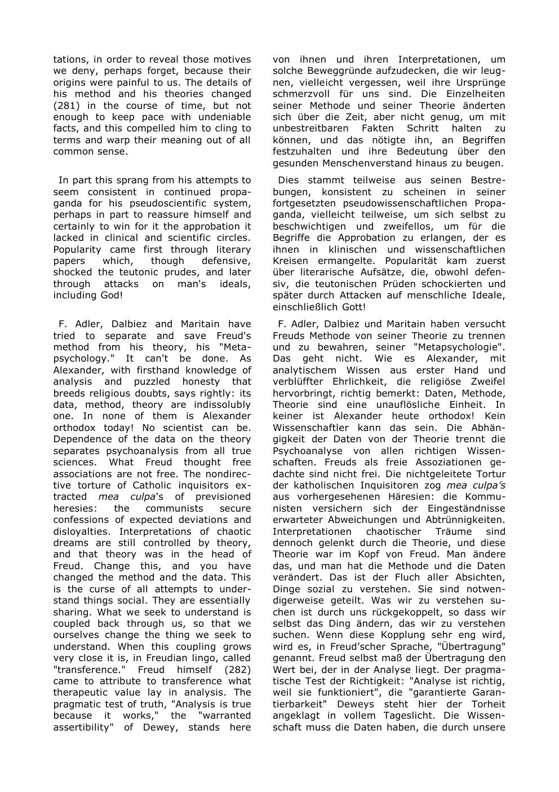

Chicago Literary Club · 1953 · collected in Embodiments of Mind
The Past of a Delusion
McCulloch's most polemical essay: a psychiatrist's attack on psychoanalysis, written as a mirror for Freud's The Future of an Illusion. Its target is not the patient but the theory — a system that can explain every resistance and therefore risks confirming itself.
Read the companionThe thesis
A theory that explains every resistance can no longer be tested by resistance.
The essay begins with aging brains and the burden of mental illness, then turns on the profession that claims to treat it. McCulloch's charge is epistemological: psychoanalysis, as he presents it, turns the patient's disagreement into further evidence for the theory. The loop is closed. The theory cannot lose.
The title is a deliberate inversion of Freud's The Future of an Illusion. Where Freud criticized religion as an illusion, McCulloch criticizes psychoanalysis as a delusion — and, in the same breath, accuses it of the religious structure it diagnoses. The essay is angry, witty, and often unfair. It is also an early and vivid statement of the problem of unfalsifiability.
Read it historically: this is a primary document of the American reception of psychoanalysis, not a neutral history. Psychoanalysis has its own evidence base, internal disagreements, and clinical traditions. The page presents McCulloch's argument, not an endorsement of its caricature.
Laboratory · the self-sealing loop
When confirmation is built into the circuit.
This is a schematic of McCulloch's charge, not a model of every analysis. A symptom is interpreted; the interpretation meets resistance; the resistance is read as confirmation; the confirmation strengthens the interpretation. Increase the gain and the loop closes. Admit an external test and it opens.
Symptom → interpretation → resistance → confirmation
The loop is not evidence of fraud; it is a structural risk of any theory that treats disagreement as data. The question is whether something outside the loop can still count against it.
loopself-sealing
statusthe loop confirms itself
The voice
The physician's anger.
“We are not now the men we were a quarter of a century ago. Our brains are failing.”
“Half the patients in all hospitals in the United States are there for trouble in their brains.”
“…they defined psychoanalysis as that disease of which it fancies itself the cure.”
“Most psychoanalysts are too clever to attempt to help the insane.”
“The orthodox believer says Freud's method is inapplicable to them, so he handles only neurotics…”
Context: the essay was written for the Chicago Literary Club and collected in Embodiments of Mind. The Vordenker edition includes a German translation and an editorial note on the title's wordplay. It is a polemic; read it alongside the history of psychoanalysis, not instead of it.
The essay itself
Pages from 1953
click to enlarge



Why it matters
A mirror for every self-confirming theory.
The essay is a period piece, but its structure is not. Every field has theories that can absorb their own failures: the market is efficient except when it isn't; the model is right except when the data are noisy; the patient resists because the interpretation is true. McCulloch's loop is a warning about all of them.
It also shows the other McCulloch: not the calm logician of the 1943 calculus, but the physician who spent years with psychotic patients and had no patience for explanations that did not help. The anger is part of the evidence.
Read next: Mysterium Iniquitatis, where McCulloch turns the same suspicion on pseudo-explanations in biology and on the limits of mechanistic knowledge.